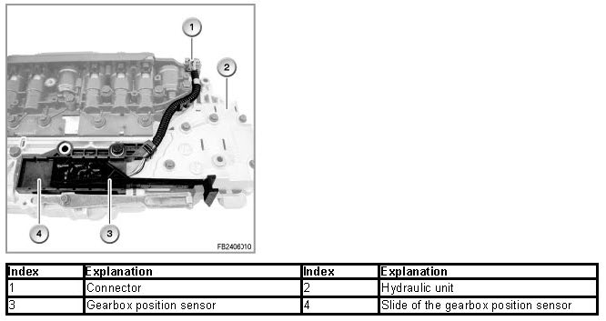
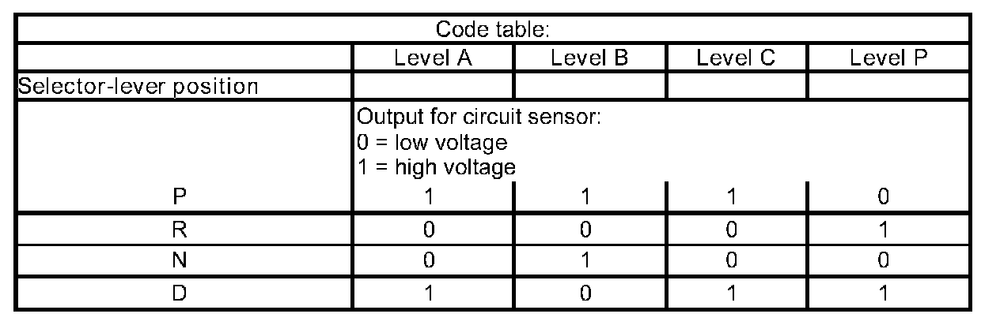

Gearbox Position Sensor
Gearbox Position Sensor
Gearbox position sensor
The gearbox position sensor is a no-contact Hall sensor. The gearbox position sensor is attached to the hydraulic control unit (hydraulic selector unit).
Brief description of components
The 5 inputs of the gearbox position sensor show each selector-lever position. The selector-lever position is transferred to the gearbox position sensor across a Bowden cable and is converted by the gearbox position sensor into a code. This code is transferred to the gearbox control and engine management system.
The gearbox position sensor is connected via a wiring harness and a connector with the mechatronics module and is supplied with a voltage of 8.3 - 9.3 V.

System functions
The following system functions are described:
Gearshift diagram for the gearbox position sensor

Notes for Service department
General information
The gearbox position sensor with wiring harness and connector can be replaced separately.
Diagnosis instructions
Relevant faults, gearbox position sensor
In the corresponding test module, the following faults are treated:
- 5658 gearbox position sensor: failure
- 5667 gearbox position sensor: A low
No liability can be accepted for printing or other errors. Subject to changes of a technical nature